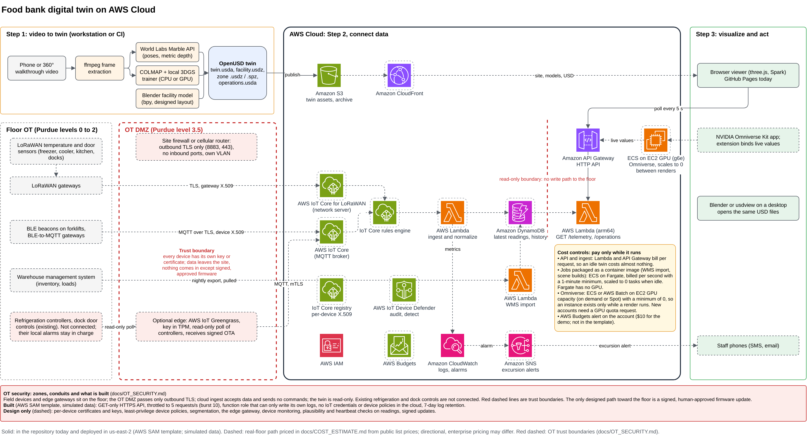
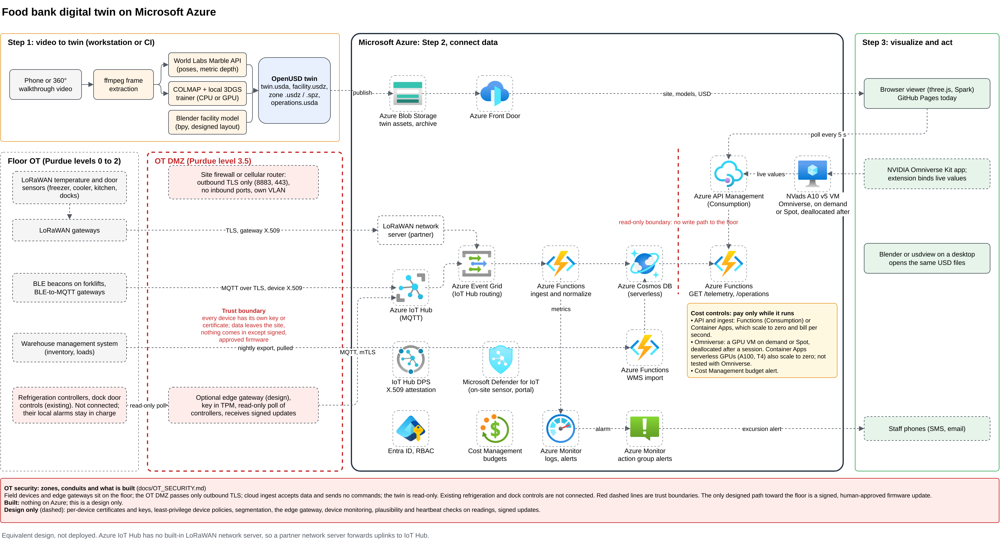
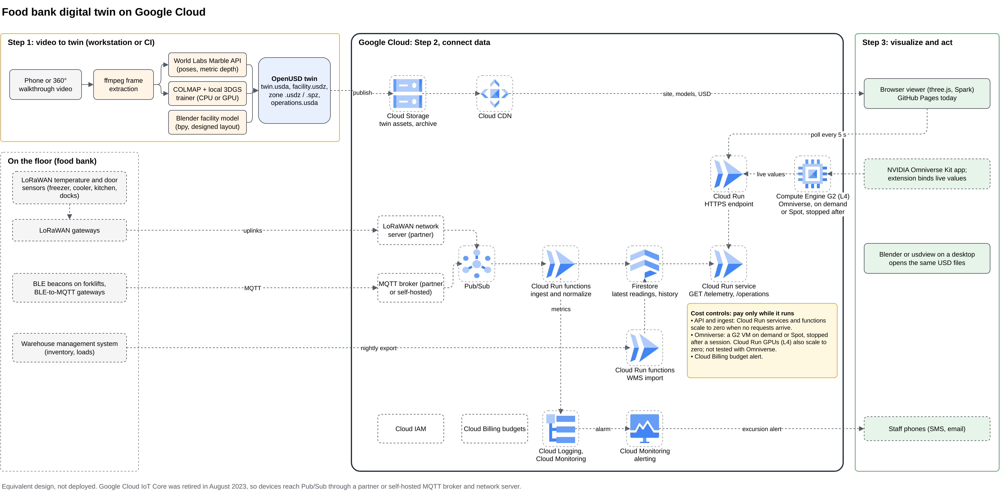

Solution architecture
The AWS architecture below is the reference design, and its solid parts are deployed today. The same design maps onto Azure and Google Cloud.

Implemented versus designed
| Component | Status |
|---|---|
| Amazon S3 (twin assets, static site copy) | Live |
| Amazon API Gateway HTTP API, throttled to 5 requests a second | Live |
AWS Lambda (Python 3.12, arm64): /telemetry, /operations, /health | Live |
| CloudWatch Logs, 7-day retention | Live |
| Browser viewer on GitHub Pages | Live |
| EC2 GPU (g6.xlarge) running Omniverse Kit, terminated after each session | Rendered (facility rendered on runs 6 and 7; splats blank) |
| IoT Core for LoRaWAN, IoT Core MQTT, rules engine, ingest Lambda, DynamoDB, WMS import, SNS alerts | Design only (priced) |
| AWS Budgets alert ($10, set on the account, not in the template) | Live |
Cost controls
Every part bills only while it is used. Lambda and API Gateway bill per request, so an idle twin costs almost nothing. Container jobs (a warehouse import, a scene rebuild) can run on ECS with Fargate, billed per second and scaled to zero. Fargate has no GPUs, so Omniverse runs on EC2 GPU capacity with a minimum of zero instances: started for a session and terminated after.
Azure and Google Cloud
Designs only, never deployed. Azure IoT Hub has no LoRaWAN network server, so it needs a partner server. Google Cloud IoT Core was retired in August 2023.


All three diagrams are generated by paper/diagrams/make_diagrams.py from one shared layout and open in draw.io.
Contracts between steps
The steps share data, not code. Any box can be replaced without changing the others.
| Boundary | Artifact | Rules |
|---|---|---|
| 1 to 3 | twin.usda, facility.usdz, zone .usdz and .spz, *.meta.json | OpenUSD, metres (metersPerUnit = 1), Y-up, floor at y = 0; splats as ParticleField3DGaussianSplat |
| 2 to 3 | GET /telemetry | zones[] (temperature, setpoint, humidity, door, status, position) and forklifts[]; positions in metres in the twin frame; simulated flag; additive changes only |
| 2 to 3 | GET /operations, operations.usda | areas[], inventory[], flows[], kitchen, trucks, keyed by master-data ids |
Why OpenUSD
OpenUSD is an open-source Alliance for OpenUSD project. Version 26.03 added the native ParticleField3DGaussianSplat schema, which makes a splat capture a first-class USD asset rather than a vendor format. With USD as the pivot, choosing a renderer is a deployment decision, not an architecture change. Omniverse mixes open components with an NVIDIA-licensed runtime; production licensing should be confirmed with NVIDIA. More: docs/ARCHITECTURE.md.